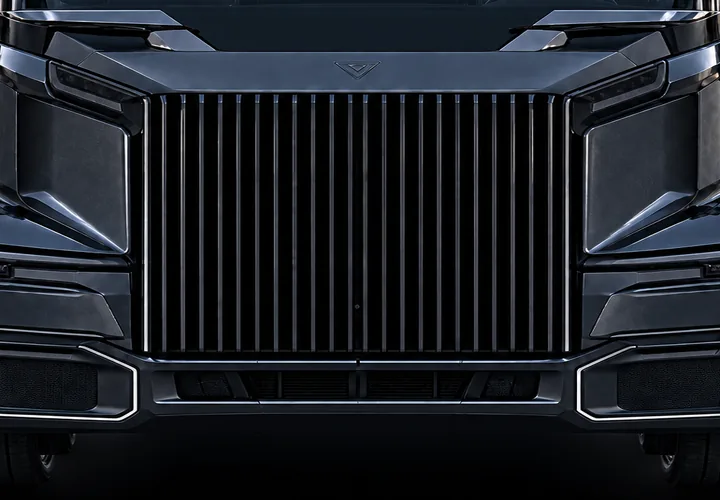

NORDSEE-GATEWAY
ROTTERDAM
Die Fracht tritt in das kontinentale Fernverkehrsnetz ein.
- HUB
- EU-004
- ABFAHRT
- 02:18 CET
- FRACHT
- GESICHERT

Echtzeit-Telemetrie und vorausschauende Wartung.

Vernetzte Routen auf dem gesamten Kontinent.

Effizienz für den europäischen Fernverkehr.

Präzision vom Lager bis zum Ziel.
DAS NETZWERK
Eine vernetzte Logistikinfrastruktur bewegt Güter über Grenzen, Städte und Branchen hinweg — rund um die Uhr.
LIVE-KORRIDOR NL / DE / AT / HU
NORDSEE-GATEWAY
Die Fracht tritt in das kontinentale Fernverkehrsnetz ein.
ZENTRALER UMSCHLAGPUNKT
Die Fracht wird auf den mitteleuropäischen Hauptkorridor abgestimmt.
ALPEN-DREHKREUZ
Hier verzweigt sich der Ostkorridor in die letzte regionale Etappe.
DONAU-VERTEILZENTRUM
Eine Sendung erreicht ihr Ziel. Das gesamte Netzwerk bleibt in Bewegung.
Von der regionalen Abholung bis zum internationalen Fernverkehr bleibt jede Bewegung Teil desselben vernetzten Systems.
DIE MASCHINE
Jeder Kilometer erzeugt Daten. Jedes System kommuniziert. Jedes Fahrzeug wird Teil einer durchgängig vernetzten Logistikinfrastruktur.
01 / WAHRNEHMUNG
Integrierte Radar-, Optik- und Umweltsensorik erfasst kontinuierlich die Fahrbahn vor dem Fahrzeug.
02 / INTELLIGENZ
Fahrzeug-, Routen- und Frachtdaten werden kontinuierlich verarbeitet und machen jeden Lkw zu einem operativen Live-Knoten.
03 / ANTRIEB
Hocheffizienter Antrieb und vorausschauendes Energiemanagement, entwickelt für den ununterbrochenen Fernverkehr.
04 / FAHRWERK
Adaptive Fahrzeugsysteme halten Stabilität, Effizienz und Lastverhalten auch bei wechselnden Straßenbedingungen kontinuierlich im Gleichgewicht.
EIN VERNETZTES SYSTEM
Jedes Fahrzeug trägt kontinuierlich zu demselben operativen Gesamtbild bei.
DER BETRIEB
Vom Eintritt der Fracht in das Netzwerk bis zum Verlassen der Laderampe wird jede Bewegung gemessen, geprüft und synchronisiert.
03 / ROUTENZUWEISUNG
04 / AUTOMATISIERTE HANDHABUNG
Der aktive Frachtpfad wird mit jeder Bewegung neu berechnet, während die Sendung die Anlage durchläuft.
05 / MASCHINELLES SEHEN
PRÄZISION IM INDUSTRIELLEN MASSSTAB
Jedes Fahrzeug, jede Rampe, jede Sendung und jede Route erscheint im selben operativen Gesamtbild.
DIE REISE
Eine Sendung. Ein kontrollierter Korridor. Jeder Kilometer bleibt mit dem Netzwerk dahinter verbunden.
02 / WECHSELNDE BEDINGUNGEN
Straßen-, Wetter- und Fahrzeugdaten bleiben synchron, auch wenn sich die Bedingungen rund um die Fracht verändern.
03 / ALPENKORRIDOR
Der internationale Güterverkehr bewegt sich durch geplante Infrastruktur, ohne dass die operative Sichtbarkeit auch nur einen Moment verloren geht.
04 / ERSTES LICHT
Vom Terminal bis zum nächsten regionalen Hub bleibt die Sendung Teil desselben vernetzten operativen Gesamtbilds.
DAS ENERGIESYSTEM
Effizienz ist in jede Ebene integriert — von Rückgewinnung und Energiemanagement im Fahrzeug bis zum Hochleistungsladen und zur Flotteninfrastruktur.
01 / RÜCKGEWINNUNG
Die Fahrzeugsysteme gewinnen beim Verzögern und im Gefälle sonst verlorene Energie zurück und speisen sie wieder in die Energiearchitektur ein.
02 / OPTIMIERUNG
Route, Topografie, Fahrzeugzustand und Betriebsbedarf werden kontinuierlich abgestimmt, um unnötigen Energieeinsatz zu reduzieren.
03 / SCHWERLASTLADEN
Ladeinfrastruktur, ausgelegt auf den operativen Rhythmus des Schwerverkehrs.
04 / INFRASTRUKTUR IM MASSSTAB
Kein Zubehör der Flotte — sondern Teil des Netzwerks selbst.
EIN SYSTEM. JEDER KILOMETER.
SIE BEGINNT MIT DEM SYSTEM.
LIVE-BETRIEB
Jedes Fahrzeug, jede Sendung und jede operative Entscheidung bleibt mit demselben Echtzeitnetz verbunden — rund um die Uhr.
DIE STEUERUNGSEBENE
Jedes Fahrzeug. Jede Sendung. Jede Route. Ein durchgängig vernetztes Gesamtsystem.
LIVE-KORRIDOR / EU-C17
KONTINUIERLICHE ANPASSUNG
Operative Echtzeitintelligenz passt Routen, Kapazitäten und Zeitplanung während des laufenden Betriebs an.
DAUERBETRIEB
Die Infrastruktur ruht nie, weil der Güterverkehr immer in Bewegung bleibt.
NETZWERKSTATUSNOMINAL
DIE NÄCHSTE BEWEGUNG
Alle Systeme laufen auf der Straße vor uns zusammen.